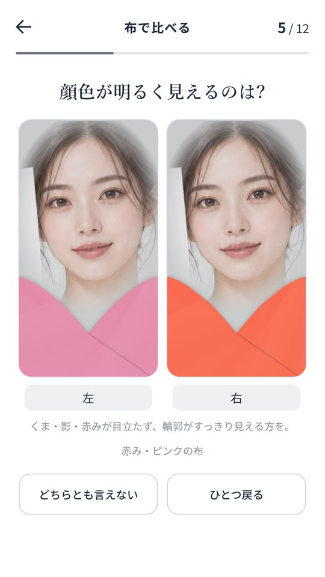
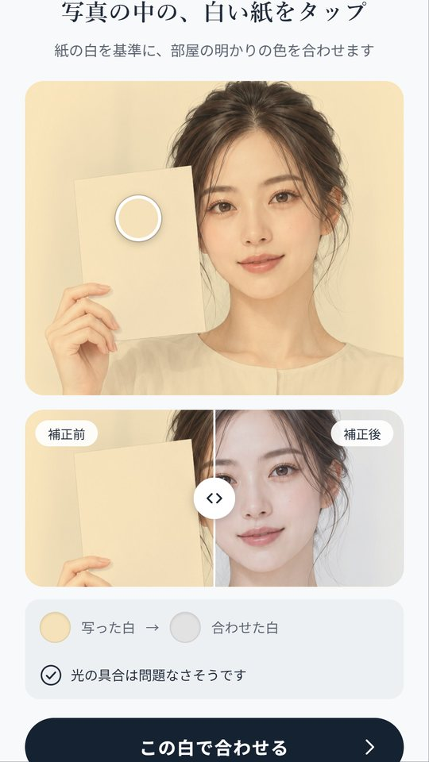
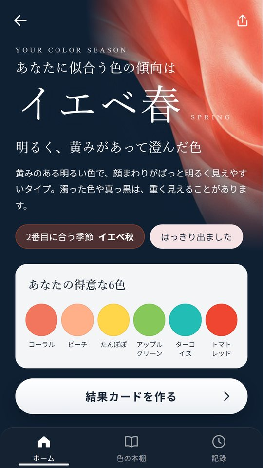
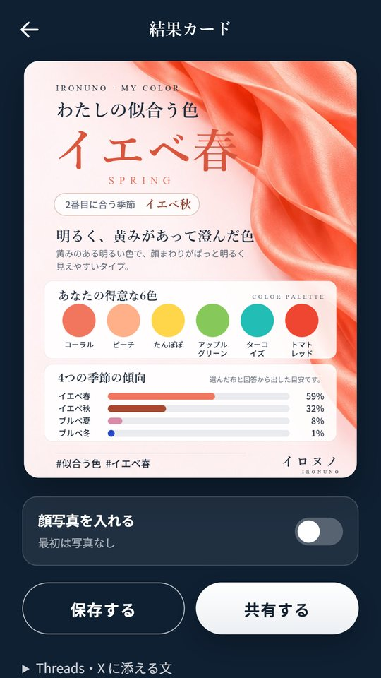
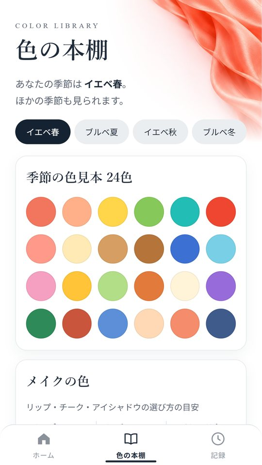
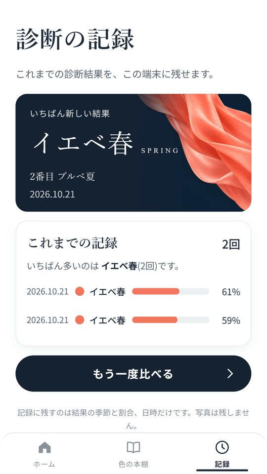

HOW IT WORKS
鏡の前で服を当てる、あの見比べを
「こっちの方が顔色がいいかも」。服を顔に当てて迷ったことがある人は多いと思います。イロヌノは、その見比べをスマホの中でやります。季節の名前は出さずに、左右に2色の布を並べて12回。左右の位置と順番は毎回ばらばらです。
- 白い紙と一緒に撮る
窓ぎわなど、顔に均一な光が当たる所で。
- 布を当てて12回比べる
くま・影・赤みが目立たない方を選ぶ。
- 5つの質問に答える
金と銀、日焼けのしかたなど。


WHITE BALANCE
電球色の部屋でも、白い紙で合わせる
夜の部屋で撮ると、顔も布も黄色っぽく写ります。写真の中の白い紙をタップすると、紙の白を基準に明かりの色を合わせてから比べます。補正の前と後は、つまみを動かして見比べられます。紙が暗い・白く飛んでいる・明かりの色が強すぎる時は、その場でお知らせします。
写真の読み込みも補正も見比べも、すべてスマホの中で行います。写真を外へ送ったり、保存したりはしません。
INSIDE THE APP
結果と、毎日の色選び
いちばん近い季節と2番目の季節、得意な6色、4つの季節の傾向を出します。結果は照明やカメラで変わる目安なので、2つの季節が近い時はそのままお伝えします。




買う前にできること
- 白い紙での補正と、布の見比べ12回・質問5問
- 季節・2番目の季節・得意な6色・4つの傾向
- 結果カードの保存と共有
- いちばん新しい結果の記録
買い切りでひらくこと(Android アプリ)
- 4つの季節、それぞれ24色の色見本
- メイク・服・髪色の色のヒント
- 顔から離して使いたい色と取り入れ方
- これまでの診断の記録
一度の購入でずっと使えます。月額の支払いはありません。
ANDROID TESTERS
Android のテストに参加してください
新しいアプリを Google Play で公開するには、その前に14日間、実際の人に試してもらう必要があります。Android のスマホをお持ちなら、3つの手順で参加できます。
テスターのグループに参加する
スマホで使っている Google アカウントで、Google グループに参加します。
テスターのグループを開くテスト用のページを開く
同じアカウントで開き、「テスターになる」を押してから、Google Play でイロヌノを入れます。
テスターになる14日間、入れたままにしておく
ときどき開いてもらえるとうれしいです。気づいたことがあればメールで教えてください。入れたままにしてもらうのがいちばんの助けです。
テスト用のページで「アプリが見つからない」と出る時は、グループへの参加が Google Play にまだ届いていないことがあります。数分待ってから、同じアカウントでもう一度開いてください。